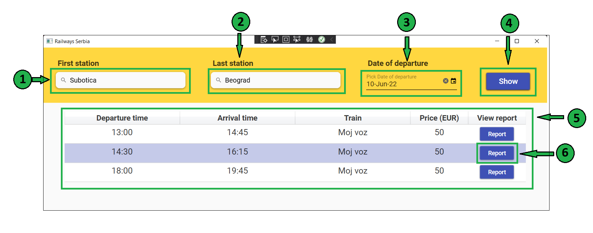

On this and next page, you can see the tickets that were sold for specific departure. In order to search for tickets, you must first select departure. This can be done by entering search criteria. Initially, all departures in the system are shown.
In the First station field enter first station for the line that you want to see tickets.
In the Last station field enter last station for the line that you want to see tickets.
In the Date of departure field select the date of departure for your line.
Click on the Show button to display all departures that meets your criteria.
After clicking the button, in the table below you can see list of departures. If you want, you can sort it by several
criteria that are written in the table header. Also, you can see departure details by clicking certain table row.
To see ticket report for the departure, click the Report button on the right side od the table. This will open another page.